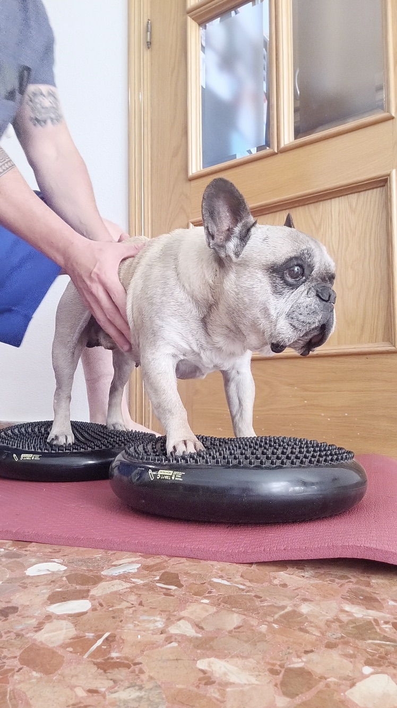
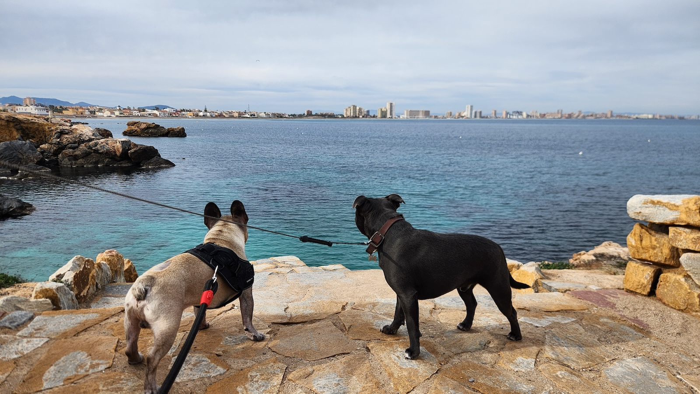

Rehabilitación canina online · Chile
Valoración para perros con problemas de movilidad
Si tu perro ha perdido funcionalidad, le cuesta levantarse, caminar, subir escalones o mover sus patas traseras, revisamos sus antecedentes y te orientamos hacia pautas de acondicionamiento general. Ver cómo funciona

Cómo funciona
Simple, humano y seguro
- 1
Completa el formulario
Tómate unos minutos para contarnos sobre tu perro: sus antecedentes, lo que puede hacer hoy y tu principal preocupación. Mientras más detalles nos entregues, más precisa será nuestra valoración.
- 2
Comparte videos
Incluye enlaces (Drive, YouTube o el formato que más te acomode) donde podamos observar cómo camina, cómo se levanta (pasa de sentado a cuatro apoyos) y cómo se desenvuelve en su entorno habitual.
- 3
Revisamos el caso a fondo
Analizamos su movilidad y antecedentes, integrando también su entorno, hábitos, estado de ánimo y rutinas. Si tu perro no cuenta con un diagnóstico previo, nuestra prioridad será derivarte y guiarte para que visites a un médico veterinario de manera oportuna.
- 4
Recibes tu plan de acción
En un plazo máximo de 5 días hábiles, recibirás una primera valoración, estructurada en categorías, y con claridad sobre cuál es el siguiente paso más adecuado según su condición. Dentro de un plazo de 10 días hábiles, recibirás un reporte detallado, con recomendaciones, consejos, y recursos útiles.
Modelo de Enfoque biopsicosocial
Analizamos su caso de manera integral
La pérdida de movilidad no solo limita el cuerpo de tu perro; también impacta directamente en su motivación diaria. Entendemos que son parte de la familia, y por eso nuestra valoración aborda su situación desde una mirada integral
Entender sus dinámicas, rutinas y relaciones nos permite estructurar un plan de acción acertado y personalizado para su bienestar
Los pilares de nuestra valoración
- Estado físico: Cómo se mueve y qué desafíos funcionales presenta en su día a día
- Bienestar emocional: Cambios recientes en su ánimo, personalidad, miedos y nivel de energía
- Entorno: Rutinas diarias, nivel de sociabilización y adaptación de los espacios en casa
- Preferencias individuales: Como seres únicos, entender sus gustos y qué los motiva es fundamental para el proceso

Cómo nace Rehabilitación Canina
Comienza con una experiencia personal
Como kinesiólogo especialista en neurorehabilitación humana y tutor de Lucas, un perro con una lesión medular progresiva, me tocó ver en primera persona cómo la pérdida de movilidad puede afectar la calidad de vida.
Cuando recibí su diagnóstico, comencé a estudiar anatomía, biomecánica y movilidad canina, integrando ese aprendizaje con mi formación en kinesiología y rehabilitación humana.
Así nace Rehabilitación Canina Chile: un proyecto creado para ayudar a otros tutores y a sus perros a mejorar su calidad de vida.
Este servicio no reemplaza la valoración, diagnóstico ni tratamiento de un médico veterinario.
Preguntas frecuentes
Este servicio está pensado para tutores de perros con dificultades de movimiento, pérdida de fuerza en el tren posterior, rigidez o inestabilidad al caminar, o que requieran acondicionamiento físico adaptado.
No. Es una revisión funcional y una orientación inicial. No diagnostica, receta medicamentos ni reemplaza el control veterinario.
No es obligatorio para enviar este primer formulario. Sin embargo, si al revisar tu caso detectamos que el problema requiere atención clínica, nuestra principal indicación será derivarte a un médico veterinario. Nosotros te guiaremos sobre qué tipo de especialista buscar (ej. traumatólogo o neurólogo) para obtener un diagnóstico seguro antes de iniciar cualquier actividad física.
Idealmente uno caminando de lado, otro desde atrás y uno levantándose o realizando la actividad que más le cuesta, siempre sin forzarlo.
Una orientación sobre el siguiente paso: solicitar más antecedentes, entregar educación general sobre actividad física, valoración 1:1, seguimiento o revisión veterinaria previa, según el caso.
Sí. La revisión se realiza online, por lo que puedes enviar tu caso desde cualquier región de Chile.
Puede servir como orientación inicial para ordenar antecedentes, revisar videos y definir próximos pasos seguros. Si hay signos agudos, dolor intenso o cambios repentinos, la prioridad siempre es consultar con un médico veterinario o especialista.
Sí, puede ser útil para perros mayores con rigidez, menor tolerancia al paseo, pérdida de fuerza o dificultad para levantarse, siempre considerando sus antecedentes veterinarios y sin forzarlo.
Durante el lanzamiento de junio a agosto de 2026, la valoración inicial y el reporte de acción son gratuitos. El plazo máximo de respuesta es de 5 días hábiles.
Contacta a un médico veterinario o servicio de urgencias. Los signos agudos no deben esperar una valoración online.